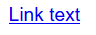
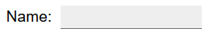

Objaśnienie KS 1.4.11:Kontrast elementów nietekstowych (Poziom AA)
W skrócie
- Cel
- Ważne informacje wizualne spełniają ten sam minimalny kontrast wymagany dla większego tekstu.
- Co robić
- Zapewnij współczynnik kontrastu znaczących wskazówek wizualnych 3:1 w stosunku do tła.
- Dlaczego jest to ważne
- Niektórzy ludzie nie widzą elementów o niskim kontraście.
Intencja
Intencją niniejszego kryterium sukcesu jest zapewnienie, że aktywne komponenty interfejsu użytkownika (tj. elementy sterujące) i znacząca grafika są rozróżnialne przez osoby o umiarkowanie słabym wzroku. Wymagania i uzasadnienie są podobne do tych dla dużego tekstu w 1.4.3 Kontrast (minimum).
Kontrolki o niskim kontraście są trudniejsze do zauważenia i mogą zostać całkowicie pominięte przez osoby z wadami wzroku. Podobnie, jeśli grafika jest potrzebna do zrozumienia treści lub funkcjonalności strony internetowej, powinna być postrzegana przez osoby z niedowidzeniem lub innymi zaburzeniami widzenia bez potrzeby stosowania technologii wspomagającej poprawiającej kontrast.
Uwaga
Współczynniki kontrastu 3:1 wymienione w tym kryterium sukcesu mają być traktowane jako wartości progowe. Porównując obliczony współczynnik kontrastu ze współczynnikiem kryterium sukcesu, obliczone wartości nie powinny być zaokrąglane (np. 2.999:1 nie spełniałoby progu 3:1).
Aktywne komponenty interfejsu użytkownika
W przypadku aktywnych kontrolek wszelkie dostarczone informacje wizualne, które są niezbędne użytkownikowi do rozpoznania obecności kontrolki i sposobu jej obsługi, muszą mieć współczynnik kontrastu co najmniej 3:1. Ponadto wszelkie informacje wizualne niezbędne do wskazania stanu, takie jak zaznaczenie lub ustawienie fokusu na elemencie, muszą również zapewniać, że informacje użyte do rozpoznania kontrolki w tym stanie mają minimalny współczynnik kontrastu 3:1.
To kryterium sukcesu nie wymaga, aby zmiany koloru, które rozróżniają stany poszczególnych komponentów, spełniały współczynnik kontrastu 3:1, gdy nie pojawiają się obok siebie. Na przykład nie ma nowego wymogu, aby odwiedzone łącza kontrastowały z domyślnym kolorem lub żeby wskaźniki najechania kursorem myszy kontrastowały ze stanem domyślnym. Komponent nie może jednak tracić kontrastu z sąsiednimi kolorami, a wskaźniki nietekstowe, takie jak zaznaczenie pola wyboru lub grafika strzałki wskazująca, że menu jest zaznaczone lub otwarte, muszą mieć wystarczający kontrast z sąsiednimi kolorami.
Obramowania
To kryterium sukcesu nie wymaga, aby kontrolki miały wizualne obramowanie wskazujące obszar trafienia, ale jeśli wizualny wskaźnik kontrolki jest jedynym sposobem identyfikacji kontrolki, wskaźnik ten musi mieć wystarczający kontrast. Jeśli tekst (lub ikona) w przycisku lub tekst zastępczy w polu tekstowym jest widoczny i nie ma wizualnego wskazania obszaru trafienia, kryterium sukcesu jest spełnione. Jeśli przycisk z tekstem ma również kolorową ramkę, ponieważ obramowanie nie stanowi jedynego wskazania, nie ma wymogu kontrastu poza kontrastem tekstu (1.4.3 Kontrast (minimalny)). Należy pamiętać, że dla osób z zaburzeniami poznawczymi zaleca się wykreślenie granicy kontrolki, aby pomóc w rozpoznawaniu kontrolki, a tym samym w zakończeniu działań.
Kolory sąsiadujące
W przypadku komponentów interfejsu użytkownika „kolory sąsiadujące” oznaczają kolory sąsiadujące z komponentem. Na przykład, jeśli pole formularza ma białe tło wewnętrzne, ciemne obramowanie i białe tło zewnętrzne, „sąsiednim kolorem” komponentu będzie białe tło zewnętrzne.

Jeśli komponenty używają kilku kolorów, każdy kolor, który nie przeszkadza w rozpoznaniu komponentu, można zignorować do celów pomiaru współczynnika kontrastu. Na przykład cień 3D na pola tekstowego lub ciemna linia graniczna między kontrastującymi tłem jest uważana za podporządkowaną kolorowi najbliższemu jasności (postrzeganej luminancji).
Poniższy przykład pokazuje pole tekstowe, które ma jasne tło od wewnątrz i ciemne tło wokół niego. Pole tekstowe ma również ciemnoszarą obwódkę, która jest uważana za umieszczoną w ciemnym tle. Obramowanie nie przeszkadza w rozpoznaniu komponentu, więc stosunek kontrastu jest ustalany między białym tłem a ciemnoniebieskim tłem.

W przypadku informacji wizualnych wymaganych do identyfikacji stanu, takich jak zaznaczenie pola wyboru lub kciuk suwaka, ta część może znajdować się w komponencie, więc sąsiedni kolor może być inną częścią komponentu.

Możliwe jest użycie płaskiej konstrukcji, w której wskaźnik stanu wypełnia komponent i nie kontrastuje z komponentem, ale kontrastuje z kolorami sąsiadującymi z komponentem.
Związek z KS Użycie koloru
Kryterium sukcesu 1.4.1 Użycie koloru dotyczy zmiany tylko koloru (odcienia) obiektu lub tekstu bez zmiany kształtu obiektu. Zasada polega na tym, że współczynnik kontrastu (różnica jasności) może być używany do rozróżniania tekstu lub grafiki. Na przykład G183: Stosowanie współczynnika kontrastu 3:1 i dostarczanie dodatkowych wskazówek wizualnych dla fokusu łączy lub kontrolek, w których do ich identyfikacji stosowany jest sam kolor jest techniką używania współczynnika kontrastu 3:1 z otaczającym tekstem w celu rozróżnienia łączy i elementów sterujących. W takim przypadku Grupa Robocza uważa kolor łącza, który spełnia współczynnik kontrastu 3:1 w stosunku do koloru tekstu niepołączonego, za spełniający kryterium sukcesu 1.4.1 Użycie koloru, ponieważ opiera się on na współczynniku kontrastu, a także na kolorze (odcieniu), aby wyrazić, że tekst jest łączem.
Informacje nietekstowe w kontrolkach, które wykorzystują samą zmianę odcienia do przekazania wartości lub stanu kontrolki, takie jak wskaźnik 1-5 gwiazdek z czarnym konturem dla każdej gwiazdy wypełnionej żółtym (pełnym) lub białym (pustą), prawdopodobnie nie spełnią kryterium użycia koloru zamiast tego.


Zastosowanie zmiany kontrastu dla fokusu i innych stanów jest techniką różnicowania stanów. To jest podstawa G195: Stosowanie dobrze widocznego wskaźnika fokusu zapewnionego przez autora i dodawane są kolejne techniki.
Relacja z KS 2.4.7 Widoczny fokus
W połączeniu z 2.4.7 Widoczny fokus, wizualny wskaźnik fokusu dla komponentu musi mieć wystarczający kontrast w stosunku do sąsiedniego tła, gdy komponent ma fokus, z wyjątkiem sytuacji, gdy wygląd komponentu jest określony przez program użytkownika i nie jest modyfikowany przez autora.
Większość wskaźników fokusu pojawia się poza komponentem - w takim przypadku musi kontrastować z tłem, na którym znajduje się komponent. Inne przypadki obejmują wskaźniki fokusu, które są:
- tylko wewnątrz komponentu i muszą kontrastować z sąsiednim kolorem (-ami) wewnątrz komponentu.
- obramowaniem komponentu (wewnątrz komponentu i przylegającym do zewnątrz) i musi kontrastować z obydwoma sąsiednimi kolorami.
- częściowo wewnątrz i częściowo na zewnątrz, gdzie każda część wskaźnika fokusu może kontrastować z sąsiednimi kolorami.

Chociaż powyższy rysunek z ciemnym konturem spełnia wymóg kontrastu elementów nietekstowych, nie jest dobrym wskaźnikiem, chyba że jest bardzo gruby. Nowe w WCAG 22: Nowość w WCAG 22: W WCAG 2.2 istnieje kryterium, które dotyczy tego aspektu, Wygląd fokusu.
Jeśli wskaźnik znajduje się częściowo wewnątrz, a częściowo na zewnątrz komponentu, każda część wskaźnika może zapewnić kontrast.

Jeśli wskaźnik fokusu zmienia obramowanie komponentu wewnątrz widocznej granicy, musi on kontrastować z komponentem. Zazwyczaj kontur otacza (na zewnątrz) widoczną granicę komponentu, w tym przypadku zmiana obramowania znajduje się tuż wewnątrz widocznej krawędzi komponentu.
Należy pamiętać, że to kryterium sukcesu nie porównuje bezpośrednio stanów kontrolki z fokusem i bez fokusu - jeśli stan fokusu zależy od zmiany koloru (np. zmiana tylko koloru tła przycisku), to kryterium sukcesu nie definiuje żadnego wymogu dotyczącego różnicy kontrastu między tymi dwoma stanami.
Przykłady aktywnych komponentów interfejsu użytkownika
Do projektowania wskaźników wskaźników fokusu, wskaźników wyboru i elementów interfejsu użytkownika, które muszą być wyraźnie widoczne, poniższe przykłady mają wystarczający kontrast.
| Typ | Opis | Przykłady |
|---|---|---|
| Tekst łącza | Domyślny tekst łącza mieści się w zakresie 1.4.3 Kontrast (minimalny),a podkreślenie wystarczy, aby wskazać łącze. |  |
| Domyślny styl fokusu | Łącza muszą mieć widoczny wskaźnik fokusu o wartości 2.4.7 Widoczny fokus. Jeżeli styl fokusu programu użytkownika nie jest dostosowywany przez witrynę internetową twórcę) w interaktywnych kontrolkach (takich jak łącza, pola formularzy lub przyciski), domyślny styl fokusu nie podlega wymogom kontrastu (ale nadal musi być widoczny). |  |
| Przyciski | Przycisk, który ma wskaźnik wyróżniający, taki jak położenie, styl tekstu lub kontekst, nie wymaga kontrastującego wskaźnika wizualnego, aby pokazać, że jest to przycisk, chociaż niektórzy użytkownicy prawdopodobnie łatwiej rozpoznają przycisk z obrysem, który spełnia wymagania kontrastu. |  |
| Pole tekstowe (minimalne) | Jeżeli pola tekstowe mają wizualny wskaźnik pokazujący, że jest to pole formularza, takie jak dolna krawędź (#767676), wskaźnik ten musi spełniać współczynnik kontrastu 3:1. |  |
| Pole tekstowe | Jeśli pole tekstowe ma wskaźnik, taki jak pełna obramowanie (#767676), wskaźnik ten musi spełniać współczynnik kontrastu 3:1. |
|
| Styl fokusu pola tekstowego | Wskaźnik fokusu jest wymagany. Chociaż w tym przypadku dodatkowy szary kontur (#CCC) ma niewystarczający kontrast 1,6:1 na białym tle (#FFF), kursor / wskaźnik, który jest wyświetlany, gdy pole tekstowe otrzymuje fokus, zapewnia wystarczająco silne wskazanie wizualne. | |
| Pole tekstowe na tle | Pola tekstowe, które nie mają obramowania i są zróżnicowane tylko kolorem tła, muszą mieć współczynnik kontrastu 3:1 do sąsiedniego tła (#043464). | |
| Przycisk przełączania | Wewnętrzne tło przycisku przełączania (#070CD5) ma dobry kontrast z zewnętrznym białym tłem. Ponadto okrągły przełącznik wewnątrz (#7AC2FF) kontrastuje z tłem wewnętrznym. |  |
| Wskaźnik rozwijania | Strzałka w dół jest wymagana, aby zrozumieć, że istnieje funkcja rozwijana, ma kontrast 4, 7:1 dla białej ikony na ciemnoszarym kolorze (#6E747B). |  |
| Wskaźnik rozwijania | Strzałka w dół jest wymagana, aby zrozumieć, że istnieje funkcja rozwijana, ma kontrast 21:1 dla czarnej ikony na bieli. |  |
| Pole wyboru - puste | Czarna obramowanie na białym tle wskazuje pole wyboru. |  |
| Pole wyboru - zaznaczone | Czarne obramowanie na białym tle wskazuje pole wyboru, czarny znaczek pośrodku wskazuje stan zaznaczenia. |  |
| Pole wyboru - błąd | Szary kolor obramowania pola wyboru (#9D9D9D) ma współczynnik kontrastu 2, 7:1 z białym tłem, co nie jest wystarczające, aby uzyskać informację wizualną wymaganą do i rozpoznania pola wyboru. |  |
| Pole wyboru - Subtelny styl najechania | Czarna obramowanie na białym tle wskazuje pole wyboru, gdy wskaźnik myszy aktywuje stan subtelnego najechania, dodaje szare tło (#DEDEDE). Czarna obramowanie ma współczynnik kontrastu 15:1 z szarym tłem. |  |
| Pole wyboru - Subtelny styl fokusu - błąd | Wskaźnik fokusu jest wymagany. Jeśli wskaźnik wskaźnik jest stylizowany przez twórcę, musi spełniać współczynnik kontrastu 3:1 z sąsiednimi kolorami. W tym przypadku wskaźnik szary (#AAA) ma niewystarczający stosunek 2, 3:1 do białego (#FFF) sąsiedniego tła. |

|
Nieaktywne komponenty interfejsu użytkownika
Komponenty interfejsu użytkownika, które nie są dostępne do interakcji z użytkownikiem (np. wyłączona kontrolka w HTML), nie muszą spełniać wymagań dotyczących kontrastu. Nieaktywny komponent interfejsu użytkownika jest widoczny, ale obecnie nie można z niego korzystać. Przykładem może być przycisk przesyłania u dołu formularza, który jest widoczny, ale nie można go aktywować, dopóki wszystkie wymagane pola w formularzu nie zostaną wypełnione.
Nieaktywne komponenty, takie jak wyłączone kontrolki w HTML, nie są dostępne do interakcji użytkownika. Decyzja o wyłączeniu nieaktywnych kontroli z wymogów dotyczących kontrastu została podjęta z szeregu względów. Chociaż dla niektórych osób korzystne byłoby rozpoznanie nieaktywnych kontrolek, bardzo trudno było ustalić uniwersalne rozwiązanie. Jako postęp w przyszłości przewiduje się metodę różnicowania prezentacji wyłączonych elementów sterujących, na przykład dodawanie ikon wyłączonych elementów sterujących w oparciu o preferencje użytkownika.
Obiekty graficzne
Termin „obiekt graficzny” odnosi się do samodzielnych ikon, takich jak ikona druku (bez tekstu) oraz ważnych części bardziej złożonego diagramu, takich jak każda linia na wykresie. W przypadku prostych grafik, takich jak ikony jednokolorowe, cały obraz jest obiektem graficznym. Obrazy składające się z wielu linii, kolorów i kształtów będą wykonane z wielu obiektów graficznych, z których niektóre są wymagane do zrozumienia.
Nie każdy obiekt graficzny musi kontrastować ze swoim otoczeniem - tylko te, które są wymagane, aby użytkownik zrozumiał, co przekazuje grafika. Zasady Gestalt, takie jak „prawo ciągłości”, mogą być używane do ignorowania drobnych nakładek z innymi obiektami graficznymi lub kolorami.


{kind=link}
Biorąc na przykład powyższy obraz magnesu, proces ustalania obiektu graficznego polega na:
-
Ocenie, jaka część każdego obrazu jest potrzebna, aby zrozumieć, co reprezentuje.
Kształt litery „U” magnesu można wyrazić poprzez kontur lub czerwone tło (oba są dopuszczalne). Ważne są także białe końcówki (w przeciwnym razie byłaby to podkowa), które muszą kontrastować z czerwonym tłem. -
Załóżmy, że użytkownik może zobaczyć tylko te aspekty. Czy kontrastują z sąsiednimi
kolorami?
Zarys magnesu kontrastuje z otaczającym tekstem (czarno-biały), a czerwień i biel pomiędzy końcówkami również mają wystarczający kontrast.
Ze względu na silny kontrast czerwieni i bieli, możliwe byłoby również umieszczenie konturu tylko wokół białych końcówek magnesu i nadal wymóg kontrastu będzie spełniony.
Wymagane do zrozumienia
Termin „wymagany do zrozumienia” jest używany w kryterium sukcesu, ponieważ wiele grafik nie musi spełniać wymagań dotyczących kontrastu. Jeśli dana osoba musi postrzegać grafikę lub część grafiki (obiekt graficzny), aby zrozumieć treść, powinna mieć wystarczający kontrast. Nie jest to jednak wymóg, gdy:
-
Grafika z osadzonym lub nałożonym tekstem przekazuje te same informacje, co etykiety i wartości na wykresie.
Uwaga
Tekst w grafice musi spełniać KS 1.4.3 Kontrast 1.4.3 (minimum).
- Grafika służy celom estetycznym, które nie wymagają, aby użytkownik ją widział lub rozumiał, aby zrozumieć treść lub skorzystać z funkcjonalności.
- „Długi opis”. Informacje są dostępne w innej formie, np. w tabeli znajdującej się obok wykresu, która staje się widoczna po naciśnięciu przycisku „Długi opis”.
- Grafika jest częścią logo lub nazwy marki (co jest uważane za „niezbędne” do jej prezentacji).
Gradienty
Gradienty mogą zmniejszyć widoczny kontrast między obszarami i utrudnić testowanie. Ogólna zasada polega na identyfikacji obiektów graficznych wymaganych do zrozumienia i przyjęciu centralnego koloru tego obszaru. Ogólna zasada polega na rozpoznaniu obiektów graficznych wymaganych do zrozumienia i przyjęciu centralnego koloru tego obszaru. Czy po usunięciu sąsiedniego koloru, który nie ma wystarczającego kontrastu, nadal możesz rozpoznać i zrozumieć obiekt graficzny?

Przykłady dynamiczne
Niektóre grafiki mogą zawierać interakcje, które zmieniają kontrast lub wyświetlają informacje jako tekst po najechaniu myszką lub dotknięciu albo ustawianiu fokusu każdego obiektu graficznego. Aby ktoś mógł w ogóle dostrzec, że grafika istnieje, już wersja domyślna bez fokusu musi mieć wystarczająco kontrastujące kolory lub tekst. W przypadku obszaru, w którym znajduje się fokus, informacje mogą być następnie udostępniane dynamicznie jako tekst wyskakujący lub dynamicznie wysuwany na pierwszy plan poprzez zwiększenie kontrastu.

Infografiki
Infografika może oznaczać dowolną grafikę przekazującą dane, taką jak wykres lub diagram. W Internecie często jest używana do wskazania dużej grafiki z wieloma stwierdzeniami, obrazami, wykresami lub innymi sposobami przekazywania danych. W kontekście kontrastu graficznego każdy element takiej infografiki należy traktować jako zbiór obiektów graficznych, niezależnie od tego, czy znajduje się w jednym pliku, czy w osobnych plikach.
Infografiki często nie spełniają kilku kryteriów AA na poziomie WCAG, w tym:
Infografika może wykorzystywać tekst spełniający inne kryteria, aby zminimalizować liczbę obiektów graficznych wymaganych do zrozumienia. Na przykład użyć tekstu o wystarczającym kontraście, aby zapewnić wartości na wykresie. Długi opis byłby również wystarczający, ponieważ wtedy infografika nie jest podstawą do zrozumienia.
Istotne wyjątki
Obiekty graficzne nie muszą spełniać wymagań dotyczących kontrastu, gdy „określona prezentacja grafiki jest niezbędna dla przekazywanych informacji”. Wyjątek niezbędności ma zastosowanie, gdy nie ma sposobu na przedstawienie grafiki z wystarczającym kontrastem bez umniejszania jej znaczenia. Na przykład:
- Logotypy i flagi: Logo marki organizacji lub produktu jest reprezentacją tej organizacji i dlatego jest wyjątkiem. Flagi mogą nie być rozpoznawalne, jeśli kolory zostaną zmienione, aby uzyskać wystarczający kontrast.
- Wrażenia zmysłowe: Nie ma wymogu zmiany zdjęć rzeczywistych scen, takich jak zdjęcia ludzi lub scenerii
-
Reprezentowanie innych rzeczy: Jeśli nie możesz przedstawić grafiki w żaden inny sposób, jest to niezbędne. Przykładami
są:
- Zrzuty ekranu pokazujące, jak pojawiła się strona internetowa.
- Diagramy informacji medycznych wykorzystujące kolory występujące w biologii (przykładowy schemat medyczny z Wikipedii).
- gradienty kolorów reprezentujące pomiar, takie jak mapy cieplne (przykładowa mapa cieplna z Wikipedii).
{kind=link}
{kind=link}
Zasady testowe
Podsumowanie ogólnego procesu wyszukiwania i oceniania grafiki nietekstowej na stronie internetowej:
-
Zidentyfikuj każdy komponent interfejsu użytkownika (łącze, przycisk, kontrolka formularza)
na stronie i:
- Zidentyfikuj wizualne (nietekstowe) wskaźniki komponentu, które są wymagane do zidentyfikowania, że kontrolka istnieje i wskazują bieżący stan. W stanie domyślnym (po załadowaniu strony) przetestuj współczynnik kontrastu w stosunku do sąsiednich kolorów.
- Przetestuj wskaźniki kontrastu w każdym stanie.
-
Zidentyfikuj każdą grafikę na stronie, która zawiera informacje wymagane do zrozumienia
treści (tj. z wyłączeniem grafik, które mają widoczny tekst dla tych samych informacji
lub są dekoracyjne) oraz:
- Sprawdź kontrast obiektu graficznego w stosunku do sąsiednich kolorów;
- Jeśli występuje wiele kolorów lub gradientów, wybierz najmniej kontrastujący obszar do przetestowania;
- Jeśli test będzie pomyślny, przejdź do następnego obiektu graficznego;
- Jeśli najmniej kontrastujący obszar jest mniejszy niż 3:1, załóż, że obszar jest niewidoczny, czy obiekt graficzny jest nadal zrozumiały?
- Jeśli jest wystarczająco dużo obiektu graficznego do zrozumienia, test jest pomyślny, w przeciwnym razie niezaliczony (kryterium nie jest spełnione).
Każda z poniższych technik ma kryteria testowania, a powiązane kryteria Widoczny fokus (2.4.7), Użycie koloru (1.4.1) i Kontrast minimum (1.4.3) mają również odpowiednie techniki.
Korzyści
Osoby ze słabym wzrokiem często mają trudności z postrzeganiem grafiki o niewystarczającym kontraście. Może się to zaostrzyć, jeśli dana osoba ma niedobór widzenia kolorów, który jeszcze bardziej obniża kontrast. Zapewnienie względnej luminancji (różnicy jasności) wynoszącej 3:1 lub większej może sprawić, że te elementy będą bardziej rozpoznawalne, gdy dana osoba nie widzi pełnej gamy kolorów.
Przykłady
- Ikony stanu na pulpicie nawigacyjnym aplikacji (bez skojarzonego tekstu) mają minimalny współczynnik kontrastu 3:1.
- Pole tekstowe ma ciemną ramkę wokół białego edytowalnego obszaru.
- Wykres wykorzystuje jasne tło i zapewnia, że kolory każdej linii mają współczynnik kontrastu 3:1.
Wykresy kołowe
Wykresy kołowe stanowią dobre studium przypadku obiektów graficznych, które podlegają temu kryterium sukcesu, poniższe wykresy kołowe mają na celu przekazanie proporcji udziału każdej przeglądarki w rynku. Uwaga: Użyte liczby są zmyślone i nie odzwierciedlają rzeczywistych udziałów w rynku.

Błąd: Wykres kołowy ma etykiety dla każdego plasterka (tak jest w punkcie 1.4.1 Użycie koloru), ale aby zrozumieć proporcje plasterków, musisz rozpoznać krawędzie plasterków (obiekty graficzne przekazujące istotne informacje), a kontrast między plasterkami nie wynosi 3:1 lub więcej.

Nie dotyczy: Wykres kołowy ma widoczne etykiety i wartości, które przekazują równoważne informacje do obiektów graficznych (plasterki kołowe).

Wynik pozytywny: Wykres kołowy ma widoczne etykiety i wystarczający kontrast wokół i między plasterkami wykresu kołowego (obiekty graficzne). Aby uzyskać odpowiedni poziom kontrastu, wokół żółtego plasterka dodano ciemniejszą ramkę.
Infografiki

Błąd: Rozróżnienie okręgów jest wymagane, aby zrozumieć wielkość sieci, a rozpoznanie ikon w każdym okręgu jest wymagane, aby określić sieć, którą wyświetla
Obiektami graficznymi są koła (porównywane z tłem) i ikony w każdym okręgu (porównywane z tłem okręgu)

Wynik pozytywny: Koła mają kontrastujące obramowania, a ikony mają kontrastujący ciemny kolor na tle jasnego koła.
Rozwiązań zapewniających kontrast jest wiele, przykład pokazuje zastosowanie obramowania. Inne techniki polegają na użyciu ciemniejszych kolorów tła okręgu lub dodaniu etykiet tekstowych i wartości dla każdego elementu.
Powiązane zasoby
Zasoby służą wyłącznie celom informacyjnym. Nie należy traktować ich jako zaleceń.
- Accessibility Requirements for People with Low Vision (Wymagania dotyczące dostępności dla osób słabowidzących)
- Smith Kettlewell Eye Research Institute - "If the text is better understood with the graphics, they should be equally visible as the text" ( „Jeśli tekst jest lepiej zrozumiały za pomocą grafiki, powinien być równie widoczny jak tekst”)
- Gordon Legge - "Contrast requirements for form controls should be equivalent to contrast requirements for text" („Wymagania dotyczące kontrastu dla kontrolek formularzy powinny być równoważne wymaganiom kontrastu dla tekstu”)
Techniki
Każdy numerowany element w tej sekcji reprezentuje technikę lub kombinację technik, które Grupa Robocza WCAG uważa za wystarczające do spełnienia tego kryterium sukcesu. Nie jest jednak konieczne stosowanie tych konkretnych technik. Aby uzyskać informacje na temat stosowania innych technik, zobacz Objaśnienie technik dla kryteriów sukcesu WCAG, szczególnie w sekcji „Inne techniki”.
Techniki wystarczające
Wybierz poniżej sytuację, która pasuje do Twojej treści. Każda sytuacja obejmuje techniki lub kombinacje technik, które są znane i udokumentowane jako wystarczające w danej sytuacji.
Sytuacja A: Kolor służy do identyfikacji komponentów interfejsu użytkownika lub służy do identyfikacji stanów komponentów interfejsu użytkownika
Sytuacja B: Kolor jest wymagany do zrozumienia treści graficznej
Błędy
Poniżej wymieniono typowe błędy, które Grupa Robocza WCAG uważa za niespełnienie tego kryterium sukcesu.
Kluczowe pojęcia
jeżeli taki element zostanie usunięty, może to całkowicie zmienić informację lub funkcjonalność treści, a informacja i funkcjonalność nie mogą zostać osiągnięte w inny sposób, zapewniający zgodność
fragment treści internetowej odbierany przez użytkownika jako pojedyncza kontrolka dla określonej funkcji
Uwaga
Wiele komponentów interfejsu użytkownika może być implementowanych w postaci pojedynczego elementu. Tutaj komponenty nie są związane z konkretną techniką programistyczną, a raczej z tym, co użytkownik odbiera jako pojedynczą kontrolkę.
Uwaga
Do komponentów interfejsu użytkownika należą elementy formularzy i linków, jak również komponenty generowane przez skrypty.
Uwaga
To, co jest tutaj rozumiane jako „komponent” lub „komponent interfejsu użytkownika” jest również czasami nazywane „elementem interfejsu użytkownika”.
renderowanie treści w sposób, który jest postrzegalny dla użytkownika
oprogramowanie umożliwiające pobieranie i przeglądanie treści internetowych
cecha dynamiczna wyrażająca właściwości komponentu interfejsu użytkownika, która może ulec zmianie w odpowiedzi na działanie użytkownika lub zautomatyzowane procesy
Stany nie mają wpływu na charakter elementu, ale reprezentują dane powiązane z tym komponentem lub możliwościami interakcji z użytkownikiem. Przykłady obejmują fokus (skupienie), najechanie wskaźnikiem myszki, wybrany (zaznaczony), wciśnięty, sprawdzony, odwiedzony/nieodwiedzony oraz rozwinięty/zwinięty.
nieosadzony zasób uzyskany z pojedynczego identyfikatora URI za pomocą protokołu HTTP wraz z wszelkimi innymi zasobami użytymi do renderowania strony w programie użytkownika lub takimi, które potencjalnie mogą być użyte do renderowania
Uwaga
Mimo że każdy z „pozostałych zasobów” mógłby być renderowany razem z podstawowym zasobem, to niekoniecznie muszą być renderowane równocześnie.
Uwaga
W celu zgodności z niniejszymi wytycznymi, zasób nie może być „osadzony” w innym zasobie wchodzącym w zakres oceny zgodności, aby można go było uznać za stronę internetową.
- Sposób, w jaki poszczególne części strony internetowej są ułożone i połączone ze sobą; oraz
- Sposób ułożenia zbioru stron internetowych.
informacje i wrażenia sensoryczne, które mają być przekazywane użytkownikowi za pośrednictwem programu użytkownika, w tym kod lub znaczniki definiujące strukturę, prezentację i interakcje
(L1 + 0.05) / (L2 + 0.05), gdzie
- L1 to relatywna luminancja oto relatywna luminancja jaśniejszego z kolorów, a
- L2 to relatywna luminancja ciemniejszego z kolorów.
Uwaga
Współczynnik kontrastu zawiera się pomiędzy 1 i 21 (powszechnie zapisywanych 1:1 do 21:1).
Uwaga
Ponieważ autor strony nie ma wpływu na sposób renderowania ustawiony przez użytkownika (np. wygładzanie czcionek lub antyaliasing), współczynnik kontrastu oblicza się jak dla wyłączonego antyaliasingu.
Uwaga
W celu spełnienia kryterium sukcesu 1.4.3 i 1.4.6, kontrast jest mierzony z uwzględnieniem standardowego koloru tła, na którym wyświetlany jest tekst przy standardowym użyciu. Jeżeli kolor tła nie został zdefiniowany, przyjmuje się, że jest to kolor biały.
Uwaga
Kolor tła to określony kolor, na którym renderowany jest tekst przy normalnym użyciu. Błędem jest nie określenie koloru tła przy jednoczesnym określeniu koloru tekstu, ponieważ wówczas kolor tła jest nieznany i nie można sprawdzić, czy zachowany jest odpowiedni kontrast. Z tego samego powodu błędem jest nie określenie koloru tekstu przy jednoczesnym określeniu koloru tła.
Uwaga
Gdy litery wyświetlane są z obwódkami, obwódki takie mogą dodawać kontrastu i mogą być uwzględniane w obliczaniu kontrastu pomiędzy literami a ich tłem. Cienka obwódka jest traktowana jak litera. Szeroka obwódka wokół litery, jeżeli wypełnia wewnętrzne elementy liter, działa jak efekt halo i może być traktowana jak tło.
Uwaga
Wymagania WCAG mogą być zweryfikowane przez zestawienie par kolorów określonych przez autora dla typowego sposobu wyświetlenia strony. Autor nie musi brać pod uwagę nietypowych sposobów wyświetlania, na przykład przez zmianę kolorów zrealizowaną przez narzędzia użytkownika, chyba, że wynikają z kodu strony.
względna jasność punktu w przestrzeni kolorów, znormalizowana do 0 dla najciemniejszego czarnego i 1 dla najjaśniejszego białego
Uwaga
Dla przestrzeni kolorów w standardzie sRGB względna luminancja koloru jest definiowana jako L = 0.2126 * R + 0.7152 * G + 0.0722 * B gdzie R, G i B zostały zdefiniowane jako:
- jeżeli RsRGB <= 0.04045 wówczas R = RsRGB/12.92 lub R = ((RsRGB+0.055)/1.055) ^ 2.4
- jeżeli GsRGB <= 0.04045 wówczas G = GsRGB/12.92 lub G = ((GsRGB+0.055)/1.055) ^ 2.4
- jeżeli BsRGB <= 0.04045 wówczas B = BsRGB/12.92 lub B = ((BsRGB+0.055)/1.055) ^ 2.4
oraz RsRGB, GsRGB i BsRGB są zdefiniowane jako:
- RsRGB = R8bit/255
- GsRGB = G8bit/255
- BsRGB = B8bit/255
Znak „^” oznacza potęgowanie. (Równanie pochodzi z [[SRGB]]).
Uwaga
Przed majem 2021 roku wartość 0,04045 w definicji była inna (0,03928). Została ona zaczerpnięta ze starszej wersji specyfikacji i została zaktualizowana. Nie ma ona praktycznego wpływu na obliczenia w kontekście niniejszych wytycznych.
Uwaga
Niemal wszystkie obecnie używane systemy kodują kolory w standardzie sRGB. O ile używany będzie inny standard kodowania kolorów do przetwarzania i wyświetlania, autor musi obliczać kolor na podstawie standardu sRGB. Jeżeli używa innego, zobacz Understanding Success Criterion 1.4.3 (Zrozumieć kryterium sukcesu 1.4.3).
Uwaga
Jeżeli dithering odbywa się po dostarczeniu kolorów, bierze się pod uwagę kolory źródłowe. W wypadku kolorów wymieszanych na poziomie źródłowym, pod uwagę bierze się uśrednione wartości kolorów źródłowych (uśredniony R, uśredniony G i uśredniony B).
Uwaga
Istnieją narzędzia, które automatycznie obliczają kontrast i błyski.
Uwaga
Istnieje osobna strona podająca definicję luminancji względnej z wykorzystaniem MathML do wyświetlania wzorów.